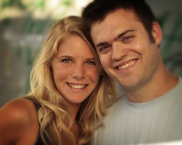

Honeymoon Update
Our honeymoon was wonderful in sunny St. Maarten. We stayed in a beautiful condo overlooking Great Bay, with our own private pool. It was very relaxing after all of the wedding planning and we had a great time.
We are now living in Chicago and have started our new careers. Thank you to everyone who was a part of our special day!
Check out our Honeymoon pictures!
 |
| Honeymoon |
 |
| Honeymoon |

Our Story
Caroline and Josh met during the fall of their junior year at Carmel High School. We had American Literature together, and while I was sleeping in the front row, Caroline would always walk by and wake me up to say hello. I am glad she did because I had the opportunity to meet such a cheerful, optimistic girl.
We started dating in January of our junior year and made it official on Valentine's Day 2003. After a year of dating, we both decided to attend Indiana University in Bloomington to study at the Kelley School of Business. Caroline studied Management and Entrepreneurship with minors in Sociology and Hotel and Tourism Management. Josh studied Accounting, Finance, and Computer Information Systems with a minor in Music. Caroline joined Zeta Tau Alpha sorority and Josh, Pi Kappa Phi fraternity.
The Engagement
We joked around about getting married, but Caroline was not expecting anything until the summer when we would be traveling through Europe. My plan was to surprise her on Valentine's Day, our four year anniversary. After I secretly asked her father's permission, the plans began.
I planned a scavenger hunt through IU's campus, culminating at the Rose Well House in the Dunn Woods behind the Union. I already had a bracelet for Caroline as an anniversary gift, and once we got to the gazebo, she found the gift and thought that we had reached the end of the hunt. But I told her there was one more clue, and that she needed to put the blindfold on again. When she took it off, I was down on one knee with ring in hand. - Josh
The Future
After the wedding, we are moving to Chicago, IL where Caroline will begin working in event sales at the Hyatt Regency - McCormick Place and Josh will work for Deloitte Consulting. We are both excited to be in a big city and still be close to home.
Check out our Photo Gallery!
 |
| Over the Last 5 Years... |